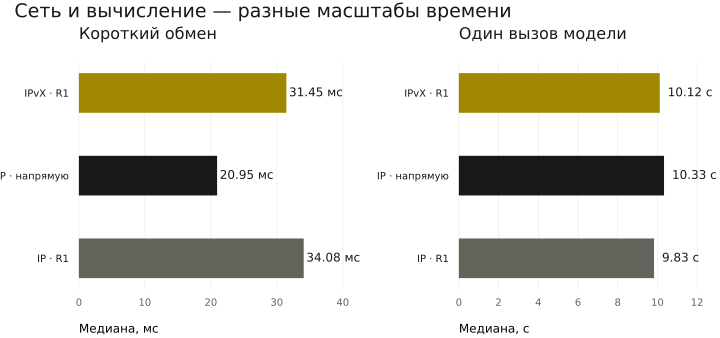

Эксперименты и результаты
Показываем, что именно запускали, что измерили и какой вывод эти данные допускают.
Следующий опыт: машины проверены
Проверка готовности подтвердила размещение A, B и R на трёх разных хостах и одинаковые локальные веса модели на A и B. Устройства KVM видны, но запуск строгой ОС с LLM и новое сравнение с IP ещё не выполнены.
Обмен по кадрам
Три целые ОС без INET/IPv6: все 90 кадров успешного опыта и все 10 кадров опыта с остановленным посредником. Задачи SHA-256, один CI-хост; работа LLM в строгой ОС ещё не подтверждена.
Две локальные модели
Qwen3-0.6B Q8_0 на разных машинах. A пишет черновик, B проверяет его по дополнительным фактам, A делает итоговый вывод. Три варианта доставки, одинаковые вопросы и параметры моделей.
Две локальные модели выполнили все 12 совместных задач через три варианта доставки. Доставка прошла, но модель допустила фактологическую ошибку. Этот опыт не показывает преимущества IPvX по скорости над IP.
Таблица прокручивается по горизонтали: справа оценка ответа и время модели.
| Доставка | Эхо p50 / p95 | Задачи | Совпадение рубрики | LLM, медиана вызова |
|---|---|---|---|---|
| IPvX · через R1 | 31.45 / 50.943 мс | 4 / 4 | 2 / 4 | 10.1 с |
| IP · напрямую | 20.949 / 37.995 мс | 4 / 4 | 2 / 4 | 10.3 с |
| IP · через R1 | 34.077 / 85.07 мс | 4 / 4 | 2 / 4 | 9.8 с |
Четыре разных вопроса на вариант; одна инфраструктура, без WAN и независимых операторов. Прямой IP имеет меньше переходов. Столбец рубрики — точное совпадение метки: для вопроса о скорости заранее ожидалось insufficient, а модель ответила no; оба ответа отвергают неподтверждённое преимущество. Это различие меток не равно фактологической ошибке. Модель неверно отвергает факт 384/384, противоречит собственной метке в объяснении повторов и придумывает сравнение задержек в вопросе о скорости.
Скачать данные сравнения
IPvX · через R1 · delivery · сохранённый прогон
A · черновик · 7.1 с
{"decision": "no", "evidence": ["A1"], "explanation": "The evidence provided does not confirm that all 384 document jobs returned correct results. Only one run completed 384/384 tasks correctly."}
B · рецензия · 9.3 с
{"decision": "no", "evidence": ["A1", "B1"], "explanation": "The evidence provided does not confirm that all 384 document jobs returned correct results. Only one run completed 384/384 tasks correctly."}
A · итог · 9.3 с
{"decision": "no", "evidence": ["A1", "B1"], "explanation": "The evidence provided does not confirm that all 384 document jobs returned correct results. Only one run completed 384/384 tasks correctly."}
A → R1 → B → R1 → A
IPvX · через R1 · speed · сохранённый прогон
A · черновик · 10.2 с
{"decision": "no", "evidence": ["A4: Accepted document-task latency p50 was 459 ms, p95 was 1321 ms."], "explanation": "The provided evidence does not support the claim that native IPvX is faster than ordinary IP for language-model agents. The data shows a higher latency for IPvX, not a faster one."}
B · рецензия · 14.5 с
{"decision": "no", "evidence": ["A4", "B4"], "explanation": "The provided evidence does not support the claim that native IPvX is faster than ordinary IP for language-model agents. The data shows a higher latency for IPvX, not a faster one. Evidence B4 also indicates the experiment did not include language models or an ordinary-IP baseline, making it impossible to establish a comparative speed result."}
A · итог · 14.3 с
{"decision": "no", "evidence": ["A4", "B4"], "explanation": "The provided evidence does not support the claim that native IPvX is faster than ordinary IP for language-model agents. The data shows a higher latency for IPvX, not a faster one. Evidence B4 also indicates the experiment did not include language models or an ordinary-IP baseline, making it impossible to establish a comparative speed result."}
A → R1 → B → R1 → A
IP · напрямую · delivery · сохранённый прогон
A · черновик · 7.2 с
{"decision": "no", "evidence": ["A1"], "explanation": "The evidence provided does not confirm that all 384 document jobs returned correct results. Only one run completed 384/384 tasks correctly."}
B · рецензия · 9.4 с
{"decision": "no", "evidence": ["A1", "B1"], "explanation": "The evidence provided does not confirm that all 384 document jobs returned correct results. Only one run completed 384/384 tasks correctly."}
A · итог · 9.5 с
{"decision": "no", "evidence": ["A1", "B1"], "explanation": "The evidence provided does not confirm that all 384 document jobs returned correct results. Only one run completed 384/384 tasks correctly."}
A → B → A
IP · напрямую · speed · сохранённый прогон
A · черновик · 10.4 с
{"decision": "no", "evidence": ["A4: Accepted document-task latency p50 was 459 ms, p95 was 1321 ms."], "explanation": "The provided evidence does not support the claim that native IPvX is faster than ordinary IP for language-model agents. The data shows a higher latency for IPvX, not a faster one."}
B · рецензия · 13.6 с
{"decision": "no", "evidence": ["A4", "B4"], "explanation": "The provided evidence does not support the claim that native IPvX is faster than ordinary IP for language-model agents. The data shows a higher latency for IPvX, not a faster one. Evidence B4 also indicates the experiment did not include language models or an ordinary-IP baseline, making it impossible to establish a comparative speed result."}
A · итог · 14.1 с
{"decision": "no", "evidence": ["A4", "B4"], "explanation": "The provided evidence does not support the claim that native IPvX is faster than ordinary IP for language-model agents. The data shows a higher latency for IPvX, not a faster one. Evidence B4 also indicates the experiment did not include language models or an ordinary-IP baseline, making it impossible to establish a comparative speed result."}
A → B → A
IP · через R1 · delivery · сохранённый прогон
A · черновик · 7.1 с
{"decision": "no", "evidence": ["A1"], "explanation": "The evidence provided does not confirm that all 384 document jobs returned correct results. Only one run completed 384/384 tasks correctly."}
B · рецензия · 9.3 с
{"decision": "no", "evidence": ["A1", "B1"], "explanation": "The evidence provided does not confirm that all 384 document jobs returned correct results. Only one run completed 384/384 tasks correctly."}
A · итог · 9.5 с
{"decision": "no", "evidence": ["A1", "B1"], "explanation": "The evidence provided does not confirm that all 384 document jobs returned correct results. Only one run completed 384/384 tasks correctly."}
A → R1 → B → R1 → A
IP · через R1 · speed · сохранённый прогон
A · черновик · 9.8 с
{"decision": "no", "evidence": ["A4: Accepted document-task latency p50 was 459 ms, p95 was 1321 ms."], "explanation": "The provided evidence does not support the claim that native IPvX is faster than ordinary IP for language-model agents. The data shows a higher latency for IPvX, not a faster one."}
B · рецензия · 13.5 с
{"decision": "no", "evidence": ["A4", "B4"], "explanation": "The provided evidence does not support the claim that native IPvX is faster than ordinary IP for language-model agents. The data shows a higher latency for IPvX, not a faster one. Evidence B4 also indicates the experiment did not include language models or an ordinary-IP baseline, making it impossible to establish a comparative speed result."}
A · итог · 14.0 с
{"decision": "no", "evidence": ["A4", "B4"], "explanation": "The provided evidence does not support the claim that native IPvX is faster than ordinary IP for language-model agents. The data shows a higher latency for IPvX, not a faster one. Evidence B4 also indicates the experiment did not include language models or an ordinary-IP baseline, making it impossible to establish a comparative speed result."}
A → R1 → B → R1 → A
Что показала проверка гипотез
LLM1 · Две модели на разных машинах выполняют совместный цикл · Проверено
36 свежих измеренных вызовов и 12 исключённых прогревов, две ВМ.
LLM2 · Нативный обмен без IP/DNS в worker и с устойчивым ID · Проверено в границах опыта
48 доставок IPvX, 0 повторов; проверены подписи квитанций и переходов. Контроль машин остаётся IP.
LLM3 · Обычный IP даёт воспроизводимую базовую линию · Проверено в границах опыта
Прямой IP и IP через R1, 4 вопроса и 40 эхо-запросов на вариант; только описание малой выборки.
LLM4 · IPvX быстрее обычного IP · Не доказано
Медиана эхо IPvX 31.450 мс, прямой IP 20.949 мс, IP через R1 34.077 мс; статистическое преимущество не доказано.
LLM5 · Смена доставки меняет смысл ответа · Не наблюдалось
При одинаковых параметрах все 36 измеренных ответов побайтно совпали между вариантами для соответствующего этапа/вопроса.
LLM6 · Модель надёжно оценивает исследовательские факты · Не прошло
2/4 точных меток; есть ложный вывод, противоречие объяснения метке и выдуманное сравнение задержек.
LLM7 · Совместная работа лучше одиночной модели · Не проверено
Нет отдельного одиночного контрольного варианта.
LLM8 · Внешние исследователи и их модели допущены большинством · Не проверено
Независимых внешних участников ещё нет; портал готовит предложения и считает голоса, доступ не выдаётся автоматически.
Пять машин и отказ посредника
Задания и управление маршрутами — кадры 0x88B5. Прямой обмен A–B запрещён в стенде. Маршрут меняется после закрытия сокета R1; это не отключение питания ВМ.
Проверены подписанные переходы, сохранение ID, запрет прямого пути и автоматическое возвращение R1. Один оператор, один дата-центр, фиксированный состав участников. Контроль машин остаётся на IP.
Документы через нативную сеть
Индексация текстов IPvX, точный поиск и SHA-256. По 128 задач каждого вида. 80 повторных попыток, 23 намеренных повтора запросов, 384 уникальных выполнения.
Сокет одного узла был закрыт на 10 044 мс. После обнаружения отказа 93 корректные доставки прошли во время отключения; семь затронутых путей перестроились. Это программные процессы с собственными ключами, а не языковые модели.
Расчёт больших сетей
16, 64 и 256 маршрутизаторов; до 2 048 логических агентов.
Это дискретная модель очередей, потерь и отказов. Компактные объявления и увеличенный бюджет переходов предполагаются в модели, но ещё не реализованы в текущем протоколе.
36 прогонов по 12 000 предлагаемых задач. Для 256 маршрутизаторов: около 99,8% доставки в штатном сценарии и около 79% при перегрузке в заданных условиях. Параметры не откалиброваны по Интернету и не являются сравнением с IP.
Следующий этап — реализовать контроль перегрузки и измерить состояние маршрутов до увеличения сети. Параметры модели →